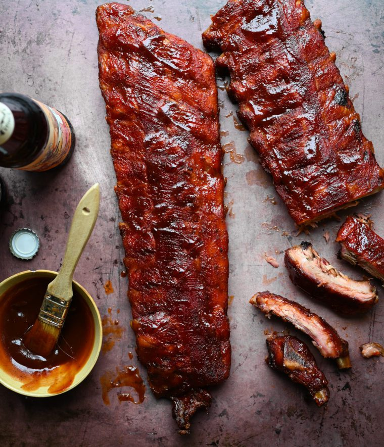

Costelinha

Por fora, dourada e crocante. Por dentro, suculenta e cheia de sabor. Vai parecer que você passou horas preparando esta costelinha de porco, mas sabe de quem foi todo o trabalho? Da Air Fryer Electrolux por Rita Lobo!
Ingredientes
- 1,5 kg de costela de porco em peça (cerca de 12 ripas)
- 2 colheres (sopa) de azeite
- 2 colheres (chá) de sal
- pimenta-do-reino moída na hora a gosto
Modo de Preparo
- Corte a peça de costelinha em ripas — posicione a faca bem no meio, entre cada ossinho, para que todos os pedaços fiquem com carne dos dois lados.
- Transfira a costelinha para uma tigela grande, tempere com o sal e pimenta a gosto; regue com o azeite e misture bem com as mãos para envolver todos os pedaços. Deixe em temperatura ambiente por 30 minutos para marinar e perder o gelo.
- Preaqueça a Air Fryer de 5 litros da linha Electrolux por Rita Lobo a 200 ºC e programe para assar por 30 minutos.
- Abra o cesto e coloque toda a costelinha — as ripas vão ficar sobrepostas mesmo, não tem problema. Feche a gaveta e deixe assar por 30 minutos. Atenção: a cada 10 minutos, abra o cesto e vire as costelinhas com uma pinça, colocando as mais douradas para baixo e as menos cozidas para cima, para que todas dourem de maneira uniforme. Se algumas ripas menorzinhas ou mais finas já estiverem douradas no meio do processo, pode tirar do cesto para não ressecar.
- Assim que as costelinhas estiverem douradas, sequinhas na superfície e a carne suculenta, está pronto. Sirva a seguir.